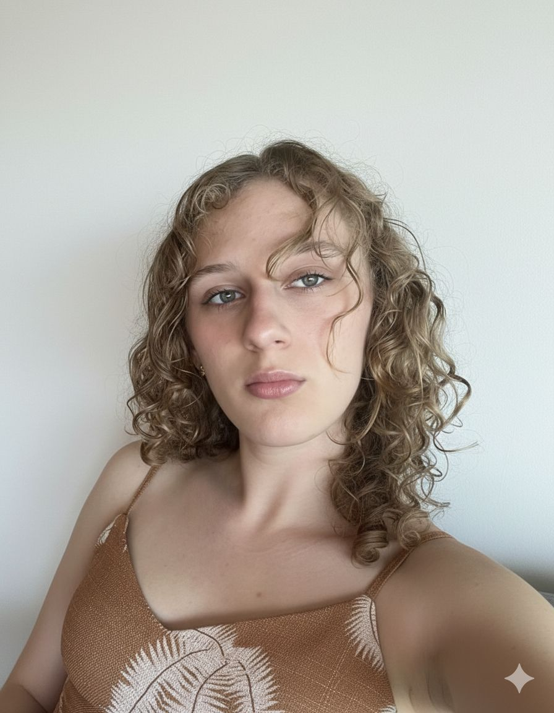

Projetos



Sou estudante de Ciência da Computação com interesse no desenvolvimento de soluções tecnológicas inovadoras que gerem impacto positivo na sociedade. Tenho experiência em projetos voltados à aplicação da tecnologia para causas sociais, o que fortaleceu minha visão sobre a importância de integrar tecnologia, humanidades e criatividade na construção de soluções mais eficientes e humanas.
Durante minha participação no projeto Trampolink, desenvolvido no Colégio Marista, tive a oportunidade de colaborar na criação de uma solução digital voltada à conexão entre pessoas e oportunidades de emprego em comunidades com menor acesso ao mercado de trabalho. Ao longo do projeto, desenvolvi habilidades em pensamento crítico, trabalho em equipe, design de interface e acessibilidade, sempre buscando criar uma experiência intuitiva e inclusiva para os usuários.
Durante minha participação no programa Technovation Girls, realizado na Universidade Católica de Pernambuco, participei do desenvolvimento de um aplicativo voltado para a alfabetização de crianças autistas nível 2. O projeto teve como foco a criação de uma ferramenta acessível e interativa, capaz de apoiar o processo de aprendizagem de forma inclusiva. Ao longo dessa experiência, desenvolvi habilidades em design centrado no usuário, resolução de problemas, trabalho em equipe e desenvolvimento de soluções tecnológicas com impacto social.